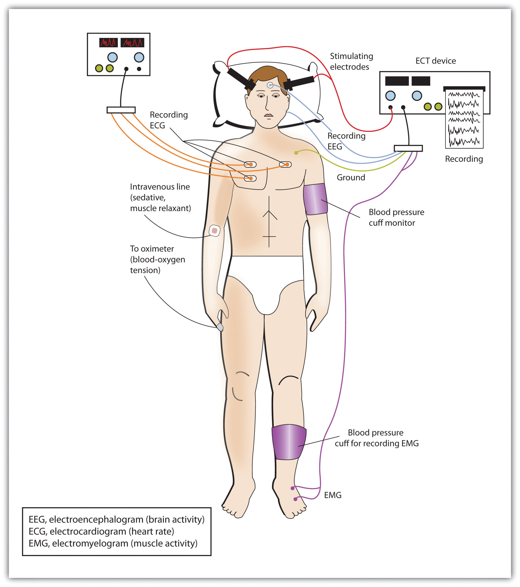
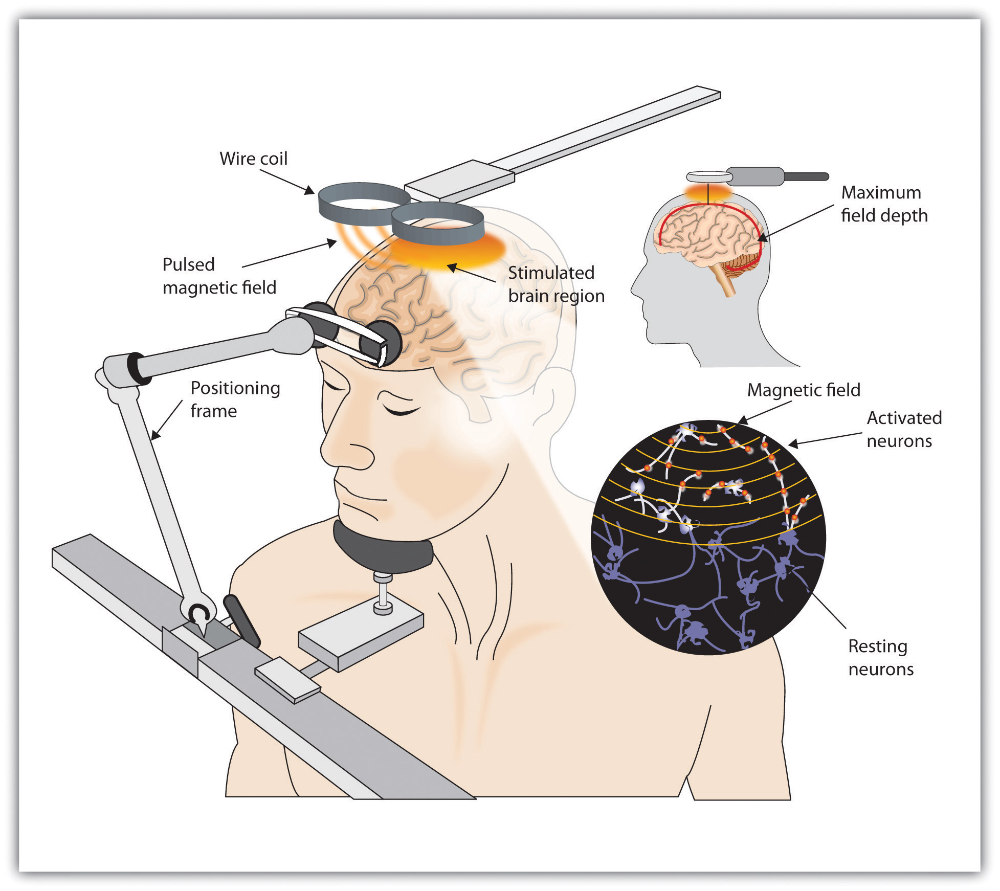

Like other medical problems, psychological disorders may in some cases be treated biologically. Biomedical therapiesTreatments designed to reduce psychological disorder by influencing the action of the central nervous system. are treatments designed to reduce psychological disorder by influencing the action of the central nervous system. These therapies primarily involve the use of medications but also include direct methods of brain intervention, including electroconvulsive therapy (ECT), transcranial magnetic stimulation (TMS), and psychosurgery.
Psychologists understand that an appropriate balance of neurotransmitters in the brain is necessary for mental health. If there is a proper balance of chemicals, then the person’s mental health will be acceptable, but psychological disorder will result if there is a chemical imbalance. The most frequently used biological treatments provide the patient with medication that influences the production and reuptake of neurotransmitters in the central nervous system (CNS). The use of these drugs is rapidly increasing, and drug therapy is now the most common approach to treatment of most psychological disorders.
Unlike some medical therapies that can be targeted toward specific symptoms, current psychological drug therapies are not so specific; they don’t change particular behaviors or thought processes, and they don’t really solve psychological disorders. However, although they cannot “cure” disorder, drug therapies are nevertheless useful therapeutic approaches, particularly when combined with psychological therapy, in treating a variety of psychological disorders. The best drug combination for the individual patient is usually found through trial and error (Biedermann & Fleischhacker, 2009).Biedermann, F., & Fleischhacker, W. W. (2009). Antipsychotics in the early stage of development. Current Opinion Psychiatry, 22, 326–330.
The major classes and brand names of drugs used to treat psychological disorders are shown in Table 13.2 "Common Medications Used to Treat Psychological Disorders".
Table 13.2 Common Medications Used to Treat Psychological Disorders
| Class | Type | Brand names | Disorder | Notes |
|---|---|---|---|---|
| Psychostimulants | Ritalin, Adderall, Dexedrine | Attention-deficit/hyperactivity disorder (ADHD) | Very effective in most cases, at least in the short term, at reducing hyperactivity and inattention | |
| Antidepressants | Tricyclics | Elavil, Tofranil | Depression and anxiety disorders | Less frequently prescribed today than are the serotonin reuptake inhibitors (SSRIs) |
| Monamine oxidase inhibitors (MAOIs) | Ensam, Nardil, Parnate, Marpaln | Depression and anxiety disorders | Less frequently prescribed today than are the SSRIs | |
| SSRIs | Prozac, Paxil, Zoloft | Depression and anxiety disorders | The most frequently prescribed antidepressant medications; work by blocking the reuptake of serotonin | |
| Other reuptake inhibitors | Effexor, Celexa, Wellbutrin | Depression and anxiety disorders | Prescribed in some cases; work by blocking the reuptake of serotonin, norepinephrine, and dopamine | |
| Mood stabilizers | Eskalith, Lithobid, Depakene | Bipolar disorder | Effective in reducing the mood swings associated with bipolar disorder | |
| Antianxiety drugs | Tranquilizers (benzodiazepines) | Valium, Xanax | Anxiety, panic, and mood disorders | Work by increasing the action of the neurotransmitter GABA (gamma-aminobutyric acid) |
| Antipsychotics (Neuroleptics) | Thorazine, Haldol, Clozaril, Risperdal, Zyprexa | Schizophrenia | Treat the positive and, to some extent, the negative symptoms of schizophrenia by reducing the transmission of dopamine and increasing the transmission of serotonin |
Attention-deficit/hyperactivity disorder (ADHD) is frequently treated with biomedical therapy, usually along with cognitive-behavior therapy (CBT). The most commonly prescribed drugs for ADHD are psychostimulants, including Ritalin, Adderall, and Dexedrine. Short-acting forms of the drugs are taken as pills and last between 4 and 12 hours, but some of the drugs are also available in long-acting forms (skin patches) that can be worn on the hip and last up to 12 hours. The patch is placed on the child early in the morning and worn all day.
Stimulants improve the major symptoms of ADHD, including inattention, impulsivity, and hyperactivity, often dramatically, in about 75% of the children who take them (Greenhill, Halperin, & Abikof, 1999).Greenhill, L. L., Halperin, J. M., & Abikof, H. (1999). Stimulant medications. Journal of the American Academy of Child & Adolescent Psychiatry, 38(5), 503–512. But the effects of the drugs wear off quickly. Additionally, the best drug and best dosage varies from child to child, so it may take some time to find the correct combination.
It may seem surprising to you that a disorder that involves hyperactivity is treated with a psychostimulant, a drug that normally increases activity. The answer lies in the dosage. When large doses of stimulants are taken, they increase activity, but in smaller doses the same stimulants improve attention and decrease motor activity (Zahn, Rapoport, & Thompson, 1980).Zahn, T. P., Rapoport, J. L., & Thompson, C. L. (1980). Autonomic and behavioral effects of dextroamphetamine and placebo in normal and hyperactive prepubertal boys. Journal of Abnormal Child Psychology, 8(2), 145–160.
The most common side effects of psychostimulants in children include decreased appetite, weight loss, sleeping problems, and irritability as the effect of the medication tapers off. Stimulant medications may also be associated with a slightly reduced growth rate in children, although in most cases growth isn’t permanently affected (Spencer, Biederman, Harding, & O’Donnell, 1996).Spencer, T. J., Biederman, J., Harding, M., & O'Donnell, D. (1996). Growth deficits in ADHD children revisited: Evidence for disorder-associated growth delays? Journal of the American Academy of Child & Adolescent Psychiatry, 35(11), 1460–1469.
Antidepressant medicationsDrugs designed to improve moods. are drugs designed to improve moods. Although they are used primarily in the treatment of depression, they are also effective for patients who suffer from anxiety, phobias, and obsessive-compulsive disorders. Antidepressants work by influencing the production and reuptake of neurotransmitters that relate to emotion, including serotonin, norepinephrine, and dopamine. Although exactly why they work is not yet known, as the amount of the neurotransmitters in the CNS is increased through the action of the drugs, the person often experiences less depression.
The original antidepressants were the tricyclic antidepressants, with the brand names of Tofranil and Elavil, and the monamine oxidase inhibitors (MAOIs). These medications work by increasing the amount of serotonin, norepinephrine, and dopamine at the synapses, but they also have severe side effects including potential increases in blood pressure and the need to follow particular diets.
The antidepressants most prescribed today are the selective serotonin reuptake inhibitors (SSRIs), including Prozac, Paxil, and Zoloft, which are designed to selectively block the reuptake of serotonin at the synapse, thereby leaving more serotonin available in the CNS. SSRIs are safer and have fewer side effects than the tricyclics or the MAOIs (Fraser, 2000; Hollon, Thase, & Markowitz, 2002).Fraser, A. R. (2000). Antidepressant choice to minimize treatment resistance. The British Journal of Psychiatry, 176, 493; Hollon, S. D., Thase, M. E., & Markowitz, J. C. (2002). Treatment and prevention of depression. Psychological Science in the Public Interest, 3, 39–77. SSRIs are effective, but patients taking them often suffer a variety of sometimes unpleasant side effects, including dry mouth, constipation, blurred vision, headache, agitation, drowsiness, as well as a reduction in sexual enjoyment.
Recently, there has been concern that SSRIs may increase the risk of suicide among teens and young adults, probably because when the medications begin working they give patients more energy, which may lead them to commit the suicide that they had been planning but lacked the energy to go through with. This concern has led the FDA to put a warning label on SSRI medications and has led doctors to be more selective about prescribing antidepressants to this age group (Healy & Whitaker, 2003; Simon, 2006; Simon, Savarino, Operskalski, & Wang, 2006).Healy, D., & Whitaker, C. J. (2003). Antidepressants and suicide: Risk-benefit conundrums. Journal of Psychiatry & Neuroscience, 28, 331–339; Simon, G. E. (2006). The antidepressant quandary—Considering suicide risk when treating adolescent depression. The New England Journal of Medicine, 355, 2722–2723; Simon, G. E., Savarino, J., Operskalski, B., & Wang, P. S. (2006). Suicide risk during antidepressant treatment. American Journal of Psychiatry, 163, 41–47. doi:10.1176/appi.ajp.163.1.41
Because the effects of antidepressants may take weeks or even months to develop, doctors usually work with each patient to determine which medications are most effective, and may frequently change medications over the course of therapy. In some cases other types of antidepressants may be used instead of or in addition to the SSRIs. These medications also work by blocking the reuptake of neurotransmitters, including serotonin, norepinephrine, and dopamine. Brand names of these medications include Effexor and Wellbutrin.
Patients who are suffering from bipolar disorder are not helped by the SSRIs or other antidepressants because their disorder also involves the experience of overly positive moods. Treatment is more complicated for these patients, often involving a combination of antipsychotics and antidepressants along with mood stabilizing medications (McElroy & Keck, 2000).McElroy, S. L., & Keck, P. E. (2000). Pharmacologic agents for the treatment of acute bipolar mania. Biological Psychiatry, 48, 539–557. The most well-known mood stabilizer, lithium carbonate (or “lithium”), was approved by the FDA in the 1970s for treating both manic and depressive episodes, and it has proven very effective. Anticonvulsant medications can also be used as mood stabilizers. Another drug, Depakote, has also proven very effective, and some bipolar patients may do better with it than with lithium (Kowatch et al., 2000).Kowatch, R. A., Suppes, T., Carmody, T. J., Bucci, J. P., Hume, J. H., Kromelis, M.,…Rush, A. J. (2000). Effect size of lithium, divalproex sodium, and carbamazepine in children and adolescents with bipolar disorder. Journal of the American Academy of Child & Adolescent Psychiatry, 39, 713–20.
People who take lithium must have regular blood tests to be sure that the levels of the drug are in the appropriate range. Potential negative side effects of lithium are loss of coordination, slurred speech, frequent urination, and excessive thirst. Though side effects often cause patients to stop taking their medication, it is important that treatment be continuous, rather than intermittent. There is no cure for bipolar disorder, but drug therapy does help many people.
Antianxiety medicationsDrugs designed to help relieve fear or anxiety. are drugs that help relieve fear or anxiety. They work by increasing the action of the neurotransmitter GABA. The increased level of GABA helps inhibit the action of the sympathetic division of the autonomic nervous system, creating a calming experience.
The most common class of antianxiety medications is the tranquilizers, known as benzodiazepines. These drugs, which are prescribed millions of times a year, include Ativan, Valium, and Xanax. The benzodiazepines act within a few minutes to treat mild anxiety disorders but also have major side effects. They are addictive, frequently leading to tolerance, and they can cause drowsiness, dizziness, and unpleasant withdrawal symptoms including relapses into increased anxiety (Otto et al., 1993).Otto, M. W., Pollack, M. H., Sachs, G. S., Reiter, S. R., Meltzer-Brody, S., & Rosenbaum, J. F. (1993). Discontinuation of benzodiazepine treatment: Efficacy of cognitive-behavioral therapy for patients with panic disorder. American Journal of Psychiatry, 150, 1485–1490. Furthermore, because the effects of the benzodiazepines are very similar to those of alcohol, they are very dangerous when combined with it.
Until the middle of the 20th century, schizophrenia was inevitably accompanied by the presence of positive symptoms, including bizarre, disruptive, and potentially dangerous behavior. As a result, schizophrenics were locked in asylums to protect them from themselves and to protect society from them. In the 1950s, a drug called chlorpromazine (Thorazine) was discovered that could reduce many of the positive symptoms of schizophrenia. Chlorpromazine was the first of many antipsychotic drugs.
Antipsychotic drugs (neuroleptics)Drugs that treat the symptoms of schizophrenia and related disorders. are drugs that treat the symptoms of schizophrenia and related psychotic disorders. Today there are many antipsychotics, including Thorazine, Haldol, Clozaril, Risperdal, and Zyprexa. Some of these drugs treat the positive symptoms of schizophrenia, and some treat both the positive, negative, and cognitive symptoms.
The discovery of chlorpromazine and its use in clinics has been described as the single greatest advance in psychiatric care, because it has dramatically improved the prognosis of patients in psychiatric hospitals worldwide. Using antipsychotic medications has allowed hundreds of thousands of people to move out of asylums into individual households or community mental health centers, and in many cases to live near-normal lives.
Antipsychotics reduce the positive symptoms of schizophrenia by reducing the transmission of dopamine at the synapses in the limbic system, and they improve negative symptoms by influencing levels of serotonin (Marangell, Silver, Goff, & Yudofsky, 2003).Marangell, L. B., Silver, J. M., Goff, D. C., & Yudofsky, S. C. (2003). Psychopharmacology and electroconvulsive therapy. In R. E. Hales & S. C. Yudofsky (Eds.), The American Psychiatric Publishing textbook of clinical psychiatry (4th ed., pp. 1047–1149). Arlington, VA: American Psychiatric Publishing. Despite their effectiveness, antipsychotics have some negative side effects, including restlessness, muscle spasms, dizziness, and blurred vision. In addition, their long-term use can cause permanent neurological damage, a condition called tardive dyskinesia that causes uncontrollable muscle movements, usually in the mouth area (National Institute of Mental Health, 2008).National Institute of Mental Health. (2008). Mental health medications (NIH Publication No. 08-3929). Retrieved from http://www.nimh.nih.gov/health/publications/mental-health-medications/complete-index.shtml#pub4 Newer antipsychotics treat more symptoms with fewer side effects than older medications do (Casey, 1996).Casey, D. E. (1996). Side effect profiles of new antipsychotic agents. Journal of Clinical Psychiatry, 57(Suppl. 11), 40–45.
In cases of severe disorder it may be desirable to directly influence brain activity through electrical activation of the brain or through brain surgery. Electroconvulsive therapy (ECT)A medical procedure designed to alleviate psychological disorder in which electric currents are passed through the brain, deliberately triggering a brief seizure. is a medical procedure designed to alleviate psychological disorder in which electric currents are passed through the brain, deliberately triggering a brief seizure (Figure 13.7 "Electroconvulsive Therapy (ECT)"). ECT has been used since the 1930s to treat severe depression.
When it was first developed, the procedure involved strapping the patient to a table before the electricity was administered. The patient was knocked out by the shock, went into severe convulsions, and awoke later, usually without any memory of what had happened. Today ECT is used only in the most severe cases when all other treatments have failed, and the practice is more humane. The patient is first given muscle relaxants and a general anesthesia, and precisely calculated electrical currents are used to achieve the most benefit with the fewest possible risks.
ECT is very effective; about 80% of people who undergo three sessions of ECT report dramatic relief from their depression. ECT reduces suicidal thoughts and is assumed to have prevented many suicides (Kellner et al., 2005).Kellner, C. H., Fink, M., Knapp, R., Petrides, G., Husain, M., Rummans, T.,…Malur, C. (2005). Relief of expressed suicidal intent by ECT: A consortium for research in ECT study. The American Journal of Psychiatry, 162(5), 977–982. On the other hand, the positive effects of ECT do not always last; over one-half of patients who undergo ECT experience relapse within one year, although antidepressant medication can help reduce this outcome (Sackheim et al., 2001).Sackheim, H. A., Haskett, R. F., Mulsant, B. H., Thase, M. E., Mann, J. J., Pettinati, H.,…Prudic, J. (2001). Continuation pharmacotherapy in the prevention of relapse following electroconvulsive therapy: A randomized controlled trial. Journal of the American Medical Association, 285, 1299–1307. ECT may also cause short-term memory loss or cognitive impairment (Abrams, 1997; Sackheim et al., 2007).Abrams, R. (1997). Electroconvulsive therapy (3rd ed.). Oxford, England: Oxford University Press; Sackeim, H. A., Prudic, J., Fuller, R., Keilp, J., Philip, W., Lavori, P. W., & Olfson, M. (2007). The cognitive effects of electroconvulsive therapy in community settings. Neuropsychopharmacology, 32, 244–254. doi:10.1038/sj.npp.1301180
Figure 13.7 Electroconvulsive Therapy (ECT)
Today’s ECT uses precisely calculated electrical currents to achieve the most benefit with the fewest possible risks.
Although ECT continues to be used, newer approaches to treating chronic depression are also being developed. A newer and gentler method of brain stimulation is transcranial magnetic stimulation (TMS)A medical procedure designed to reduce psychological disorder that uses a pulsing magnetic coil to electrically stimulate the brain., a medical procedure designed to reduce psychological disorder that uses a pulsing magnetic coil to electrically stimulate the brain (Figure 13.8 "Transcranial Magnetic Stimulation (TMS)"). TMS seems to work by activating neural circuits in the prefrontal cortex, which is less active in people with depression, causing an elevation of mood. TMS can be performed without sedation, does not cause seizures or memory loss, and may be as effective as ECT (Loo, Schweitzer, & Pratt, 2006; Rado, Dowd, & Janicak, 2008).Loo, C. K., Schweitzer, I., & Pratt, C. (2006). Recent advances in optimizing electroconvulsive therapy. Australian and New Zealand Journal of Psychiatry, 40, 632–638; Rado, J., Dowd, S. M., & Janicak, P. G. (2008). The emerging role of transcranial magnetic stimulation (TMS) for treatment of psychiatric disorders. Directions in Psychiatry, 28(4), 315–332. TMS has also been used in the treatment of Parkinson’s disease and schizophrenia.
Figure 13.8 Transcranial Magnetic Stimulation (TMS)
TMS is a noninvasive procedure that uses a pulsing magnetic coil to electrically stimulate the brain. Recently, TMS has been used in the treatment of Parkinson’s disease.
Still other biomedical therapies are being developed for people with severe depression that persists over years. One approach involves implanting a device in the chest that stimulates the vagus nerve, a major nerve that descends from the brain stem toward the heart (Corcoran, Thomas, Phillips, & O’Keane, 2006; Nemeroff et al., 2006).Corcoran, C. D., Thomas, P., Phillips, J., & O’Keane, V. (2006). Vagus nerve stimulation in chronic treatment-resistant depression: Preliminary findings of an open-label study. The British Journal of Psychiatry, 189, 282–283; Nemeroff, C., Mayberg, H., Krahl, S., McNamara, J., Frazer, A., Henry, T.,…Brannan, S. (2006). VNS therapy in treatment-resistant depression: Clinical evidence and putative neurobiological mechanisms. Neuropsychopharmacology, 31(7), 1345–1355. When the vagus nerve is stimulated by the device, it activates brain structures that are less active in severely depressed people.
PsychosurgerySurgery that removes or destroys brain tissue in the hope of improving disorder., that is, surgery that removes or destroys brain tissue in the hope of improving disorder, is reserved for the most severe cases. The most well-known psychosurgery is the prefrontal lobotomy. Developed in 1935 by Nobel Prize winner Egas Moniz to treat severe phobias and anxiety, the procedure destroys the connections between the prefrontal cortex and the rest of the brain. Lobotomies were performed on thousands of patients. The procedure—which was never validated scientifically—left many patients in worse condition than before, subjecting the already suffering patients and their families to further heartbreak (Valenstein, 1986).Valenstein, E. (1986). Great and desperate cures: The rise and decline of psychosurgery and other radical treatments for mental illness. New York, NY: Basic Books. Perhaps the most notable failure was the lobotomy performed on Rosemary Kennedy, the sister of President John F. Kennedy, which left her severely incapacitated.
There are very few centers that still conduct psychosurgery today, and when such surgeries are performed they are much more limited in nature and called cingulotomy (Dougherty et al., 2002).Dougherty, D., Baer, L., Cosgrove, G., Cassem, E., Price, B., Nierenberg, A.,…Rauch, S. L. (2002). Prospective long-term follow-up of 44 patients who received cingulotomy for treatment-refractory obsessive-compulsive disorder. American Journal of Psychiatry, 159(2), 269. The ability to more accurately image and localize brain structures using modern neuroimaging techniques suggests that new, more accurate, and more beneficial developments in psychosurgery may soon be available (Sachdev & Chen, 2009).Sachdev, P. S., & Chen, X. (2009). Neurosurgical treatment of mood disorders: Traditional psychosurgery and the advent of deep brain stimulation. Current Opinion in Psychiatry, 22(1), 25–31.